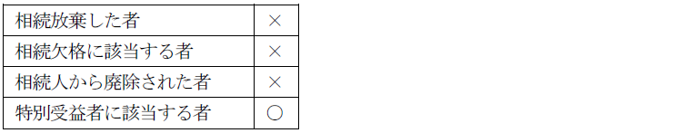

第１編 各 論
第１章 所有権の登記
第２節 所有権移転の登記
Ⅰ 所有権移転の登記（特定承継）
代物弁済とは、弁済できる者（弁済者）が、債権者との間で、本来の給付に代えて他の給付をすることにより債務を消滅させる旨の契約をした場合において、その弁済者が当該他の給付をすることにより、債権を消滅させることをいう（民法482条）。
代物弁済によって、債権者は目的物を取得する。従って、物の所有権の譲渡をもって代物弁済したのであれば、契約成立時に所有権が移転することになる。もっとも、不動産の場合には、所有権移転登記がされなければ、代物弁済の効力は生じない（最判昭40.4.30）。
【申請例14 所有権移転 代物弁済】
事例： 令和○年6月28日、ＡとＢは、甲土地の乙区1番抵当権の被担保債権の弁済に代え、Ａ所有の甲土地をＢに移転する代物弁済契約を締結した。甲土地の課税標準の額は、金1000万円である。
1. 申請情報の内容
・登記原因及びその日付
登記原因は「代物弁済」と記載し、日付は、代物弁済契約の締結日を記載する。
【申請例15（参考） 抵当権抹消 代物弁済】
上記の代物弁済を原因とする所有権移転の登記を、令和○年7月1日に申請した場合、抵当権抹消登記の申請例は次のようになる。
・登記原因及びその日付
登記原因は「代物弁済」と記載し、日付は登記申請日を記載する。代物弁済による債権消滅の効力発生には対抗要件の具備まで必要だからである。
権利能力なき社団名義の不動産の所有権の登記は認められていないので、権利能力なき社団が所有する不動産は、以下の名義で登記することになる（最判昭47.6.2・登記実務）。
①代表者
②構成員全員
そこで、権利能力なき社団の不動産が①の代表者の名義で登記されている場合において、その代表者が交代したときは、所有権移転の登記を申請することになる。これが「委任の終了」を登記原因とする所有権移転の登記である。
【申請例16 所有権移転 委任の終了】
事例： 令和○年6月28日、権利能力なき社団であるＣ団体（代表者Ｄ）は、臨時社員総会を開催し、総社員の一致でＤの解任と後任の代表者Ｅの選任がなされ、その場でＥが就任を承諾した。Ｃ団体の所有する土地は、Ｄ名義で登記されている。土地の課税標準の額は、金1000万円である。
1. 申請情報の内容
・登記原因及びその日付
登記原因は「委任の終了」と記載し、日付は新代表者が就任した日を記載する。
2. 登記申請の可否
①権利能力なき社団が複数の代表者名義でする所有権保存の登記の申請情報には、その持分を内容とすることを要するか？
→ 要する。
②代表者名義で登記されている権利能力なき社団所有の不動産について、代表者が死亡した場合に、登記名義人を新代表者に変更するためには、どのような登記を申請すべきか？
→ 旧代表者の相続人と新代表者との共同申請による所有権移転登記を申請する（登研476P.139）。
※「委任の終了」を登記原因として権利能力なき社団の代表者変更による所有権移転の登記がされている場合には、相続を原因とする所有権移転の登記を申請することはできない（登研459P.98）。
③代表者名義で登記されている権利能力なき社団所有の不動産について、代表者が死亡したことにより相続人名義の相続を原因とする所有権移転登記がされている場合において、相続登記を抹消せずに、登記名義人を新代表者に変更するため、旧代表者の相続人と新代表者が共同して「委任の終了」を登記原因とする所有権移転登記を申請できるか？
→ できない。相続登記を抹消後、旧代表者の相続人と新代表者が共同して「委任の終了」を登記原因とする所有権移転の登記を申請すべきである（登研518P.116）。
権利変動の過程を忠実に登記に反映すべきであるからである。
④旧代表者名義で登記されている権利能力なき社団の不動産を、代表者更迭後に第三者に譲渡した場合、当該第三者への所有権移転登記の前提として、現在の代表者名義に所有権移転登記をする必要があるか？
→必要がある（平2.3.28民3.1147）。
※代表者が死亡し、新代表者の選任後、新代表者が第三者に権利能力なき社団の不動産を売却した場合も、旧代表者から新代表者への移転登記を省略することはできない。
実体上の権利者と登記名義人とが乖離している場合には、実体上の権利者を登記権利者とし、登記名義人を登記義務者として「真正な登記名義の回復」を登記原因として、所有権移転の登記を申請することができる（昭39.2.17民3.125）。
例えば、所有権の変動がないにもかかわらず、誤ってＡからＢへの所有権移転の登記がされている場合、本来ならＡからＢへの所有権移転の登記を抹消すべきである。しかし、権利に関する登記の抹消は、登記上の利害関係を有する第三者がある場合には、当該第三者の承諾があるときに限り、申請することができるので（68条）、ＢがＣに対して抵当権を設定していた場合、Ｃの承諾がなければ、所有権移転登記の抹消登記を申請することはできない。このような場合に、真実の権利者を登記名義人とするために、「真正な登記名義の回復」を登記原因とするＢからＡへの所有権移転の登記を申請することが認められている。
【申請例17 所有権移転 真正な登記名義の回復】
事例： 令和○年1月25日、ＡとＢは、甲土地について売買契約がないにもかかわらず、所有権移転登記を申請し、登記がなされ、その後、Ｃを抵当権者とする抵当権設定登記がなされた。同年6月28日、ＡとＢは、是正手段を採ることとした。なお、Ｃの承諾は得られなかった。土地の課税標準の額は、金1000万円である。
1. 申請情報の内容
・登記原因及びその日付
登記原因は「真正な登記名義の回復」と記載し、日付は記載しない。原因日付といえる日付がないからである。
2. 登記申請の可否
①「真正な登記名義の回復」を原因とする所有権移転の登記は、当事者の申請によってすることはできるか？
→ 判決による場合はもちろんのこと、当事者の申請によることもできる（昭39.2.17民3.125）。
②真正な登記名義の回復を原因として、死者名義への所有権移転登記をすることも認められる（昭57.3.11民3.1952）。
所有権の登記名義人が譲渡担保権を設定した場合、譲渡担保を原因とする所有権移転登記を申請することができる。また、譲渡担保権契約が解除された場合や債務が弁済された場合も、移転登記を申請することができる。
1. 申請情報の内容
(1) 登記原因及びその日付
設定の場合：「年月日譲渡担保」（日付は設定契約の日）
解除の場合：「年月日譲渡担保契約解除」※解除の場合、抹消登記によることもできる。
債務弁済の場合：「年月日債務弁済」（日付は弁済の日）
(2) 登録免許税
不動産の価額×20/1000（登免法別表1.1.(2)ハ）
1. 相続人等による申請
登記権利者、登記義務者又は登記名義人について相続その他の一般承継があったときは、相続人その他の一般承継人は、当該権利に関する登記を申請することができる（62条）。
ex1. 相続人による被相続人名義の登記
ex2. 合併存続会社による合併消滅会社名義の登記
相続その他の一般承継による登記申請では、一般承継を証する情報を提供しなければならない（不登令7条1項5号イ）。
具体的には、相続人による申請の場合に提供する相続証明情報（戸籍謄本等）や、会社の合併があった場合の合併を証する情報（登記事項証明書又は会社法人等番号（平27.10.23民2.512））等がこれにあたる。
2. 権利者（買主等）の相続
【申請例18 所有権移転 一般承継人による登記（買主死亡）】
事例： Ａが、自己所有の土地を、令和○年6月28日に、Ｂに売却した。その後、所有権移転登記を申請しないでいるうちに、令和○年7月1日にＢが死亡した。Ｂの相続人は、ＣとＤである。土地の課税標準の額は、金1000万円である。
(1) 申請人
登記権利者の相続人が登記権利者に代わって登記を申請する場合、相続人のうち1人の者が申請することができる（登研308P.77）。
登記権利者側であるため、保存行為（民法252条5項）といえるからである。
(2) 添付情報
①登記原因証明情報（61条、不登令別表30添付情報イ）
売買であれば、被相続人と売主（買主）との間の売買契約書等
②登記識別情報（22条本文）
③印鑑証明書（不登令16条2項、18条2項）
④相続証明情報（62条、不登令7条1項5号イ）
相続人その他の一般承継人による登記の申請をする場合には、相続その他の一般承継があったことを証する市区町村長、登記官その他の公務員が職務上作成した情報（公務員が職務上作成した情報がない場合にあっては、これに代わるべき情報）が添付情報となる（不登令7条1項5号イ）。
相続人に申請適格があることを証するために、提供する。
⑤住所証明情報（不登令別表30添付情報ロ）
被相続人の住所証明情報を提供する。被相続人の死亡時の住所を証するためである。具体的には、被相続人の住民票の除票の写しがこれに当たる。
⑥委任状
登記申請を委任した本人が死亡した場合、登記の申請をする者の委任による代理人の権限は、本人の死亡によっては消滅しないので（17条1号）、相続人ではなく本人が作成した代理権限証明情報を申請情報と併せて提供することができる（平6.1.14民3.366）。
3. 義務者（売主等）の相続
【申請例19 所有権移転 一般承継人による登記（売主死亡）】
事例： Ａが、自己所有の土地を、令和○年6月28日に、Ｂに売却した。その後、所有権移転登記を申請しないでいるうちに、同年7月1日にＡが死亡した。Ａの相続人は、ＣとＤである。土地の課税標準の額は、金1000万円である。
(1) 申請人
登記義務者が死亡した場合において、相続人が複数あるとき、遺産分割協議によっても、登記申請義務をそのうちの1人が承継するものと定めることはできず、相続人全員を登記義務者としなければ申請できない（昭34.9.15民甲2067）。
なお、包括受遺者は相続人と同一の権利義務を有し（民法990条）、遺贈者の債務をも承継すると解されているため、包括受遺者がいる場合、被相続人の所有権移転登記義務は包括受遺者が履行すれば足りる（昭56.9.8民3.5484参照）。
相続人となる者

(2) 添付情報
①登記原因証明情報（61条、不登令別表30添付情報イ）
売買であれば、被相続人と売主（買主）との間の売買契約書等
②登記識別情報（22条本文）
被相続人が登記名義を取得した際の登記識別情報
③印鑑証明書（不登令16条2項、18条2項）
売主の相続人の印鑑証明書
④相続証明情報（62条、不登令7条1項5号イ）
相続その他の一般承継があったことを証する市町村長、登記官その他の公務員が職務上作成した情報（公務員が職務上作成した情報がない場合にあっては、これに代わるべき情報）を提供する。
相続人に申請適格があることを証するために、提供する。
⑤住所証明情報（不登令別表30添付情報ロ）
⑥委任状
4. 登記申請の可否
(1) 所有権の移転時期についての特約がない場合において、土地の売買契約成立後、登記前に、買主が死亡した場合、買主の相続人名義で、所有権移転登記を申請することはできるか？
→ できない（登研308P.77）。死亡した買主名義で登記申請する必要がある。実体上、売主から買主に、そして買主から買主の相続人へと所有権が移転しているので、登記にも、この物権変動の過程を反映させなければならないからである。
(2) 表題部所有者が不動産を売却した後、所有権保存の登記をしないまま死亡した場合、表題部所有者の相続人は、相続により当該不動産の所有権を取得しないので、自己名義で所有権保存の登記をすることはできない。この場合、相続人は買受人名義の登記の前提として、死亡した表題部所有者の名義で所有権保存の登記をすることができるか？
→ できる（昭32.10.18民甲1953）。
(3) 甲土地の所有者Ａが死亡し、Ａの相続人が子Ｂ・Ｃである場合において、甲土地について遺産分割協議によりＢへの相続の登記が完了した後、ＡがＤに対して甲土地を売却する契約を締結していたことが判明した場合、相続を原因とする所有権移転登記を抹消することなく、売買を原因とするＢからＤへの所有権移転の登記を申請することができるか？
→ できる（昭37.3.8民甲638）。